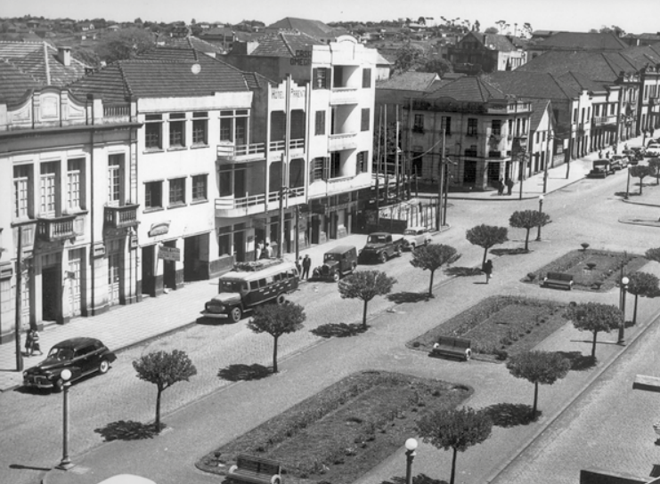
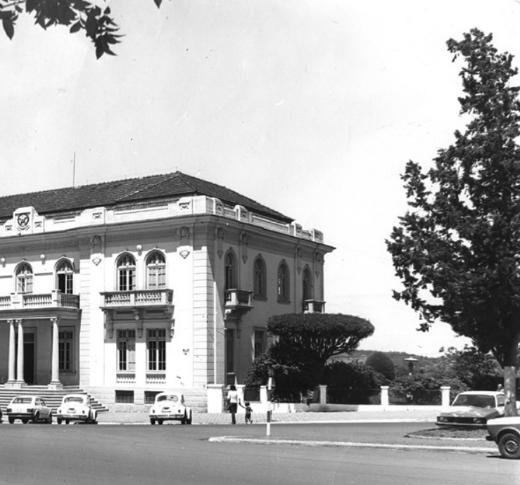
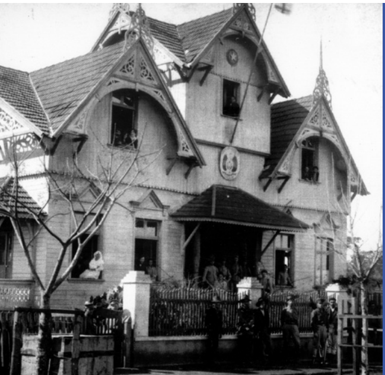
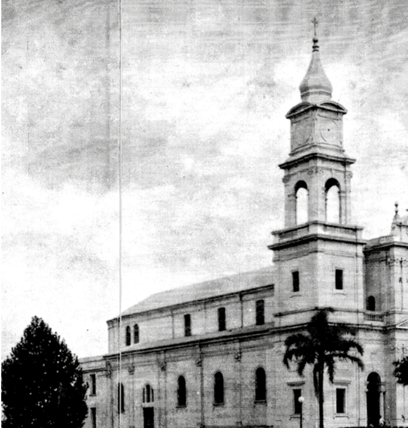

Conhecendo a História de Erechim...
Erechim, também chamada de "Capital da Amizade" e "Terra dos Bota-Amarelas",
nasceu a partir de um projeto de colonização iniciado em 1908, sob influência do
pensamento positivista, que preconizava a "ordem e progresso". Esse planejamento
foi feito em uma cidade estruturada em quadras e avenidas largas, cercadas por
canteiros floridos, que refletem a intenção de oferecer uma boa qualidade de vida.
A fundação da colônia foi projetada para atrair trabalhadores para pequenas propriedades rurais,
incentivando a produção agrícola e promovendo a integração econômica da região com o resto do estado.
Imigrantes europeus, especialmente italianos, alemães e poloneses, chegaram em grande número.
Esses colonos trouxeram conhecimentos em agricultura e produtividade, que foram essenciais para o
desenvolvimento econômico e social da nova comunidade. Em 1910, já possuía 226 colonos habilitados na
região. Esses grupos conviveram com descendentes de indígenas caingangues, caboclos e outros moradores da região,
formando um interessante mosaico cultural e étnico. Os imigrantes desempenharam um papel central na economia
local, dedicando-se à agricultura e ao comércio e, posteriormente, à indústria. Eles trouxeram técnicas
agrícolas inovadoras e adaptaram seus conhecimentos às condições locais. Além de contribuir para a infraestrutura
econômica, os imigrantes também fundaram escolas, igrejas e associações, promovendo suas tradições culturais e construindo
uma identidade plural para a cidade. O sucesso da colonização de Erechim, além de expandir a ocupação do território gaúcho,
fortaleceu o comércio e a agricultura local, dando origem a uma economia voltada e próspera. A contribuição dos
imigrantes também é visível no patrimônio cultural e nas festividades da cidade, que celebram as diferentes etnias que ajudaram
a fundar e moldar Erechim.
Avenida Maurício Cardoso, 1953 - Depois de uma série de pequenos incêndios
ocorridos no ano de 1929, três grandes incêndios na década de 1930 contribuíram para que o ciclo das construções
em madeira chegasse ao fim em Boa Vista.O primeiro destes fogaréus, em 1931, teve início no Cinema Avenida, destruindo 12 casas.
O segundo, no ano seguinte, destruiu 11 residências na Avenida José Bonifácio (hoje Avenida Maurício Cardoso).
O terceiro, em 1933, além de queimar cinco casas na mesma Avenida, deixou uma vítima fatal. A série de infortúnios provocou
questionamentos em relação à causa dos sinistros. Todas as edificações queimadas estavam seguradas, sendo os proprietários ressarcidos
pela Seguradora Livonius Ltda. A Avenida foi apelidada de Avenida Livonius.">
Prefeitura Municipal de Erechim, 1985 - O andar térreo do prédio da Prefeitura Municipal
ostenta grades de ferro, tendo funcionado como
cadeia - casa prisional - entre 1932 e anos seguintes.">
 Castelinho: Local onde funcionava a Comissão de Terras - Na Revolução de
1923 transformou-se num hospital para atender os chimangos. Instalada, inicialmente, em
Erechim (hoje Getúlio Vargas), a sede da unidade foi
transferida a Paiol Grande (atual Erechim) em 1916,
no prédio que é conhecido
como Castelinho, construído entre 1912 e 1915.">
Igreja Matriz São José, década de 20 - A primeira construção religiosa
de Paiol Grande, em 1913, foi uma capela, erguida pelos esforços de Elisa Vacchi – líder da religião católica. Porém, conta Ducatti Netto,
em 1911 já havia sido celebrada pelo padre Alberto Scheumann, de Getúlio Vargas, a primeira missa do povoado, tendo como local uma
casa construída nas proximidades da estação ferroviária. Em 1919, foi criada a Paróquia de Erechim, concedendo a esta o padroeiro São José – que daria origem
ao nome da Catedral São José, sede de três grandes painéis, com 14 quadros da Via-Sacra e símbolos
em baixo-relevo, erigida durante os anos de 1969 e 1977">